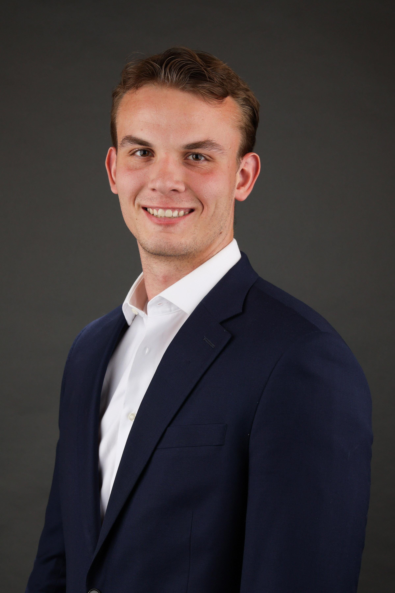
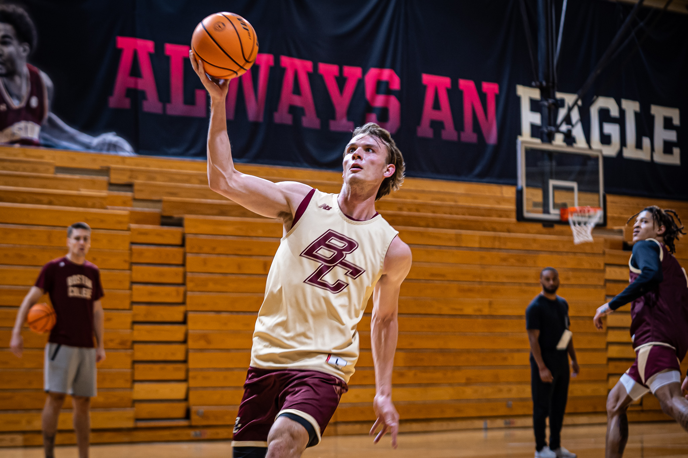

Andrew E. Kenny

Objective
Seeking a full-time role as a Project Manager at an mid-stage healthcare technology startup company.
Education
- Master of Science, Entrepreneurship - University of Southern California (2023-2024)
- Bachelor of Arts, Neuroscience and Finance - Boston College (2019-2023)
Work Experience
Manager of Business Operations - VisionVentions
May 2024 - Present
- Generated $30,000 in sales during Q3 2024 in the company’s early growth phase.
- Created company marketing playbook; managed all outbound marketing initiatives including email marketing and
direct mail campaigns, LinkedIn outreach and posts, cold calling.
- Managed expense reporting and purchasing decisions for company expenditures, utilized 3-statement financial
models to perform financial forecasting; successfully pitched to investors to raise a pre-seed financing round.
- Demonstrated surgical devices directly to physicians and solicited ideas for novel devices; engaged directly with
hospital administrators to understand relevant CPT codes.
- Built 3D models of surgical devices using SolidWorks, assisted with product development of various Class I and
II devices, established quality management system for FDA approval for commercial distribution of core product.
Global Partnerships Intern - Anschutz Entertainment Group
May 2022 - July 2022
- Worked alongside Global Partnerships leadership team to manage AEG’s relationship with key partner American
Express across international tours, venues, and festivals including Coachella and Stagecoach.
- Drove financial forecasting and budgeting for AEG's tours, venues, and festivals
Leadership Experience
Graduate Assistant Coach - USC Basketball
August 2023 - May 2024
- Devoted 60+ hours a week assisting coaching staff with practice, scouting, recruiting, film breakdown,
administrative support, and day-to-day operations of the program.
Player - Boston College Men's Basketball Team
August 2019 - May 2023
- Devoted 35+ hours a week to practice, training, competition, travel, and preparation as a member of the Division I
Boston College men’s basketball team competing in the Atlantic Coast Conference (ACC).

Skills
- Google Office Suite
- Alteryx
- Python
- HTML
- SQL
- Microsoft Office - Word, Excel, PowerPoint
- Conversational Proficiency in Spanish
Awards and Certifications
- 2023 National Associations of Basketball Coaches Honoree
Other
Contact
Media
LinkedIn